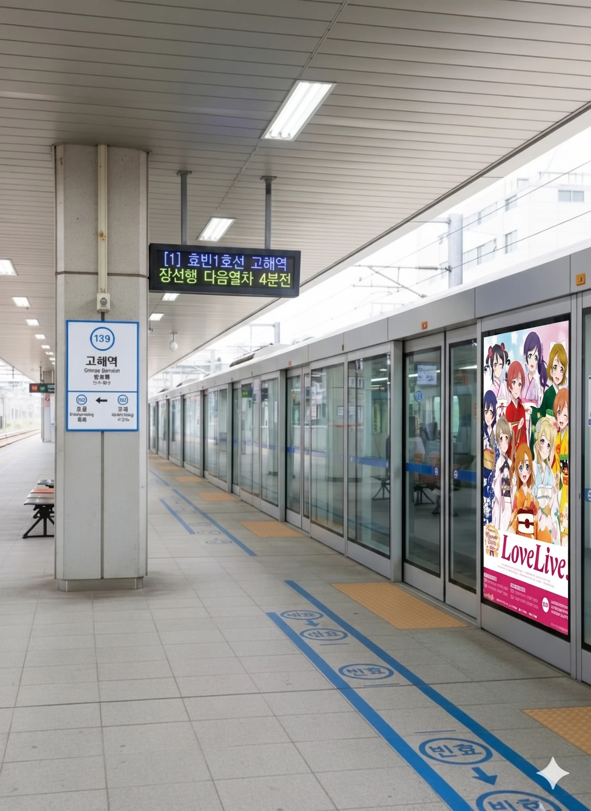
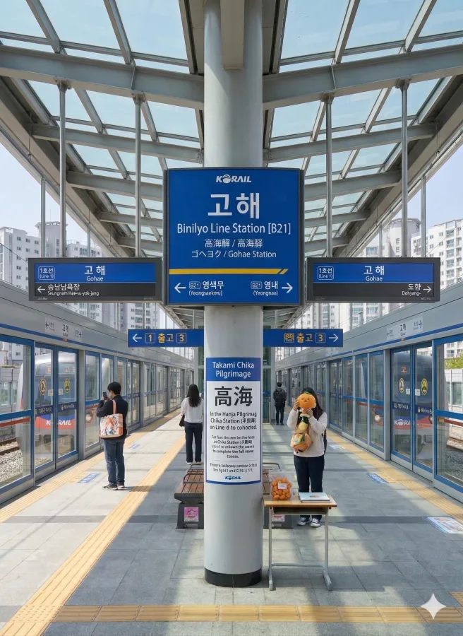

효빈 도시철도 1호선 139번, 빈효선 광역전철 B21번, 그리고 개통을 앞둔 효빈 도시철도 4호선의 431번(예정) 역. 효빈광역시 탄성군 고해읍 이와리 81 소재.
기존에는 1호선과 빈효선 광역전철이 만나는 주요 환승역 역할을 해왔으나, 현재 효빈 도시철도 4호선이 천가역에서 고해차량기지로 향하는 인입선을 활용하여 당역까지 연장되는 사업이 착공 준비 중에 있다. 정확한 개통 예정일은 미정이다. 언제 첫 삽을 뜨고 언제 완공될지는 며느리도 모른다 카더라 더 나아가 당역을 거쳐 약산역 방면으로도 추가 연장이 예정되어 있어, 향후 3개 노선이 만나는 탄성군의 핵심 교통 결절점으로 떡상할 준비를 하고 있다.
1호선 개통 당시인 1994년에는 지상에 임시 승강장을 설치하여 영업을 시작했다. 그러나 이후 1호선이 도향역 방면으로 추가 연장되고, 근처에 4호선 고해차량기지가 들어서는 등 주변 인프라가 대대적으로 확충되면서 2000년에 현재의 지하 역사로 완전히 이전하였다. 현재 1호선 승강장은 지하에, 빈효선 광역전철 승강장은 지상에 위치한 형태를 띠고 있다.
사실 고해역이 위치한 고해읍은 인구가 약 2만 명 수준으로, 탄성군의 다른 읍들(도변읍 9만 명, 탄성읍 4만 9천 명, 서목읍 3만 5천 명)에 비하면 규모 면에서 상당히 초라한 동네다. 인구수만 보면 하루에 승객 몇 명 안 타는 간이역이나 근근이 유지해야 할 수준임에도 불구하고, 무려 1994년에 1호선이 일찌감치 들어왔고 이후 빈효선 광역전철에 4호선까지 연장되며 3개 노선 환승역이라는 기염을 토하게 되었다.
그 비결은 바로 고해읍이 품고 있는 막강한 관광 자원 덕분이다. 전통적인 관광 명소인 고화산과 월상시장 등이 밀집해 있어 유동 인구가 상상을 초월하며, 최근에는 서브컬처의 굵직한 성지로 폭발적인 수요를 자랑하며 전국구 단위의 방문객을 끌어모으고 있다. 원주민보다 귤 머리 장식을 한 외지인이 더 많다 카더라 인구는 적어도 막대한 관광객들이 지하철의 수익을 든든하게 받쳐주기 때문에 이렇게 이례적인 교통 인프라 투자가 가능했던 것이다.
|
1
빈
|
||
|---|---|---|
| 번호 | 주요 시설 및 방향 | 비고 |
| 1 | 고해읍 사무소 | |
| 2 | 고화산 | |
| 3 | 월상시장 | |
※ 지하 2면 3선 상대식 승강장 (중선 포함)

| 능릉 ↑ | ||||
| 하행 | ㅣ | ㅣ | ㅣ | 상행 |
| ↓ 도향 | ||||
| 상행 | 1 효빈 도시철도 1호선 (완행/급행) | 창선 · 영색무 방면 (급행 정차) |
| 하행 | 1 효빈 도시철도 1호선 (완행/급행) | 산형 · 승남해수욕장 방면 (급행 정차) |
※ 지상 복선 섬식 승강장 (1면 2선)

| 영색무 ↑ | |||
| ㅣ | 하행 | 상행 | ㅣ |
| ↓ 영내 | |||
| 상행 | 빈 빈효선 광역전철 (완행/급행) | 효빈항 · 영색무 방면 (급행 정차) |
| 하행 | 빈 빈효선 광역전철 (완행/급행) | 영내 · 약산 · 궁하 · 고남 방면 (이후 고남역까지 전역 정차) |
※ 상대식 승강장 (예정)
현재 착공 준비 중이며, 인접한 고해차량기지 인입선 구조물을 활용하여 상대식 승강장으로 건설될 예정이다. 이왕 짓는 거 좀 넓게 짓지, 귤 성지순례객들 미어터질 텐데
| 천가 ↑ | |||
| 하행 | ㅣ | ㅣ | 상행 |
| ↓ 약산 (예정) | |||
| 고해역 이용객 통계 | ||||
|---|---|---|---|---|
| 연도 | 1 | 빈 | 합계 | 비고 |
| 2020년 | 5,180명 | 5,709명 | 10,889명 | |
| 2021년 | 5,280명 | 5,767명 | 11,047명 | |
| 2022년 | 7,280명 | 6,583명 | 13,863명 | |
| 2023년 | 8,080명 | 6,650명 | 14,730명 | |
| 2024년 | 8,280명 | 6,717명 | 14,997명 | |
| 구분 | 정류소명 | 노선 번호 |
|---|---|---|
| 순방향 | 고해역 | 258, 551, 592, 8000, 고해01, 고해02 |
| 역방향 | 고해역(건너편) | 528, 551-1, 952, 8000R, 고해01-1, 고해02-1 |